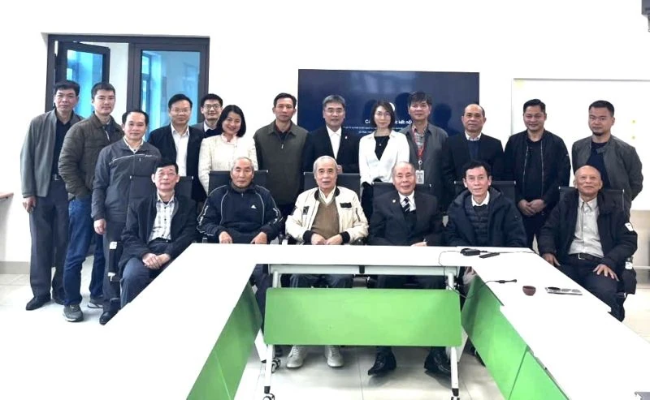
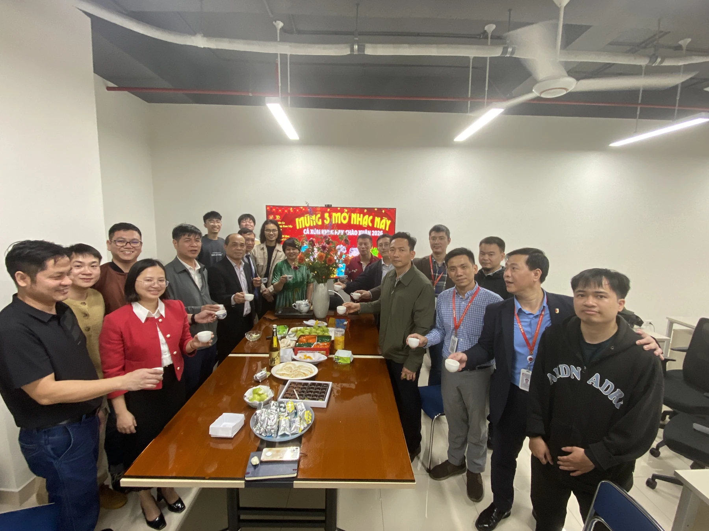
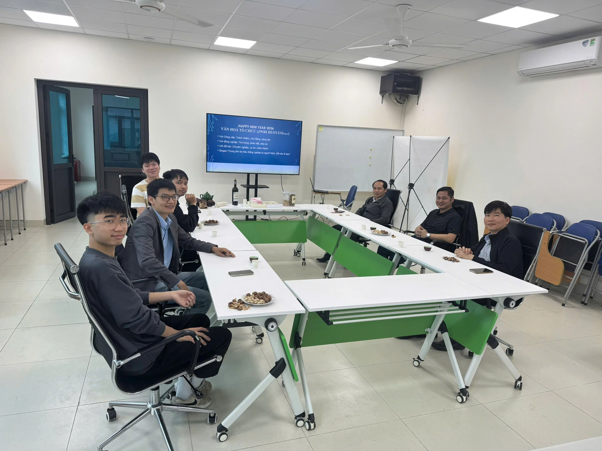
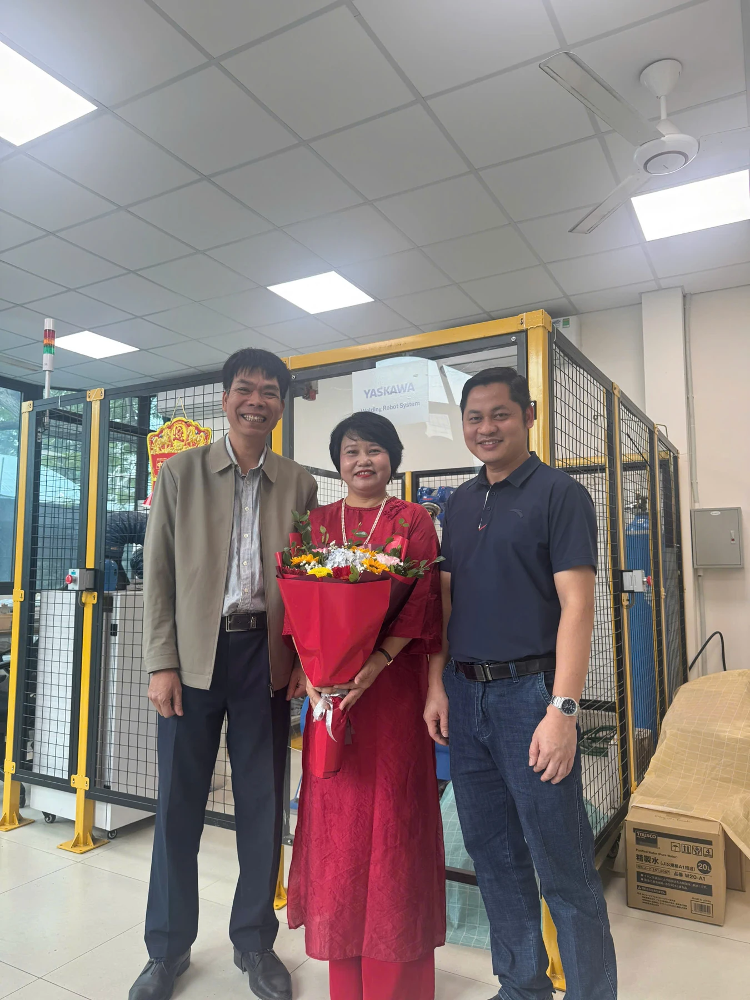
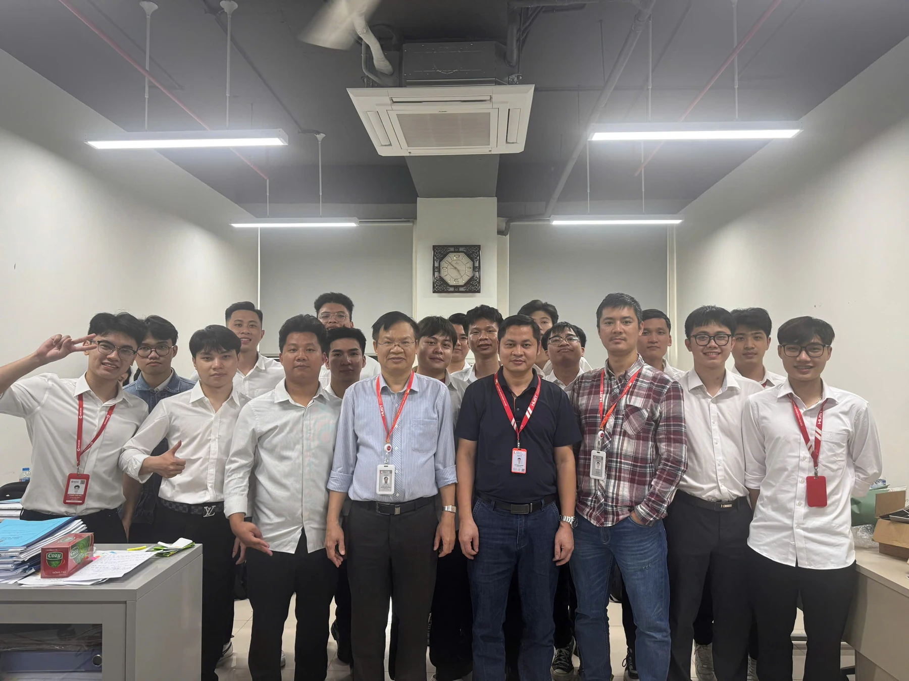
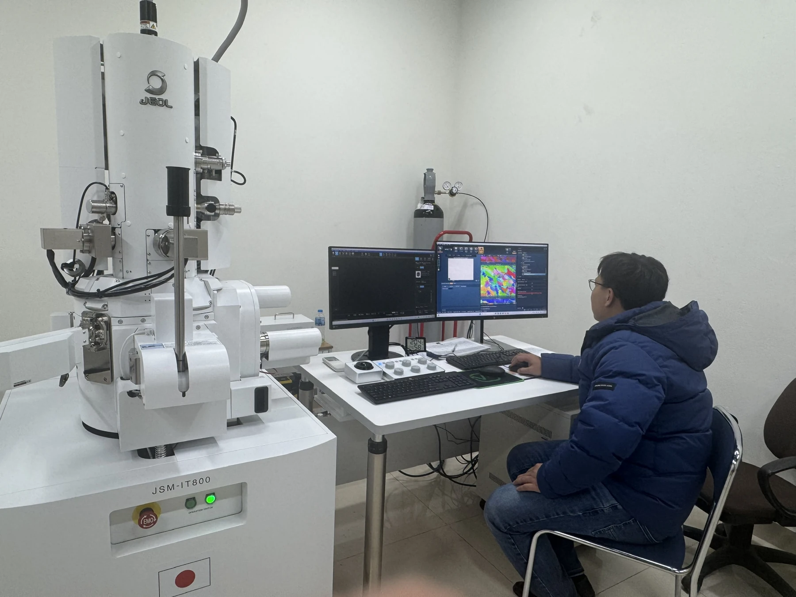
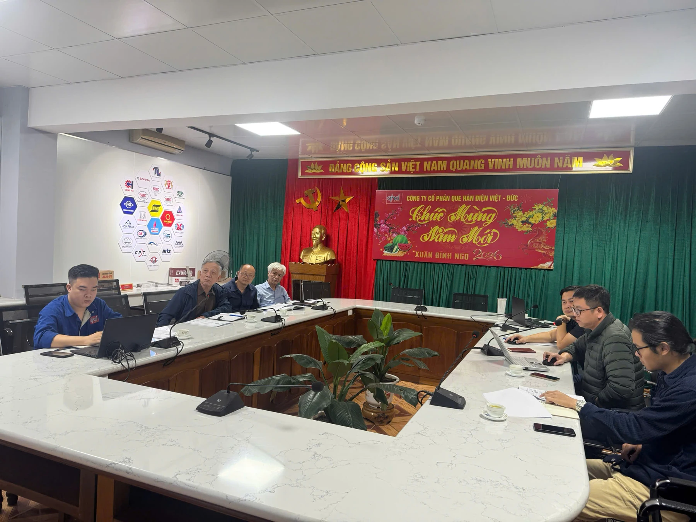
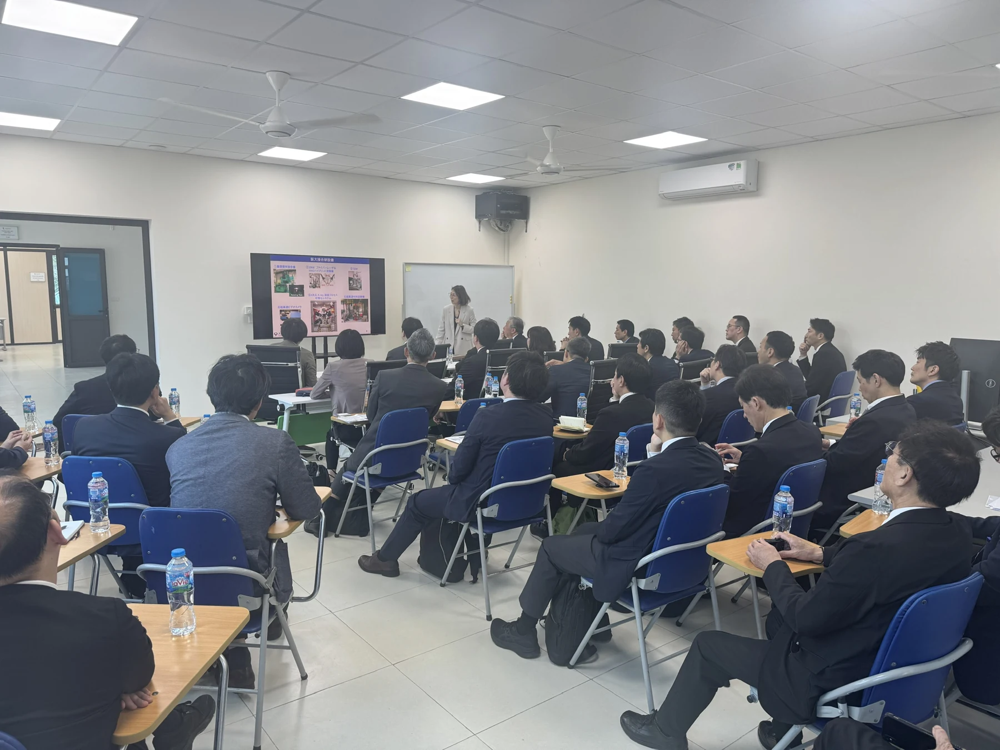

Bài viết gốc bằng tiếng Việt

Những tháng đầu năm 2026 đã ghi dấu một khởi đầu rực rỡ và đầy năng lượng tại Trung tâm Nghiên cứu Công nghệ Hàn & Ghép nối (JWRI HUST-UOsaka). Từ các hoạt động tổng kết, định hướng chiến lược, gắn kết nội bộ, nâng cao chất lượng đào tạo, đến việc mở rộng hợp tác công nghiệp và đón tiếp các phái đoàn quốc tế cấp cao, Trung tâm đang từng bước khẳng định vị thế là một điểm sáng trong nghiên cứu và đào tạo kỹ thuật công nghệ cao.
1. Hội nghị Tổng kết và Triển khai Kế hoạch chiến lược năm 2026
Mở đầu cho chuỗi sự kiện đầu năm, vào ngày 11/02/2026, Trung tâm đã long trọng tổ chức buổi họp báo cáo tổng kết hoạt động và đề ra kế hoạch chiến lược cho năm 2026. Sự kiện vinh dự có sự hiện diện và chỉ đạo sát sao của các lãnh đạo cấp cao: PGS. TS. Huỳnh Đăng Chính – Phó Giám đốc Đại học Bách khoa Hà Nội; PGS. TS. Trương Hoành Sơn – Hiệu trưởng Trường Cơ khí; GS. Phạm Văn Sáng – Phó Hiệu trưởng Trường Cơ khí; cùng PGS. TS. Mạc Thị Thoa – Phó ban Khoa học - Công nghệ.
Đặc biệt, buổi họp còn là dịp hội ngộ ấm áp giữa các cán bộ đương chức và những "nguyên lão", các thầy cô hưu trí của Nhóm Chuyên môn (NCM) Hàn & Công nghệ Kim loại. Sự ủng hộ, đồng hành từ Ban Giám đốc Đại học, Lãnh đạo Trường Cơ khí cùng những lời góp ý tâm huyết từ các thế hệ đi trước chính là động lực to lớn để Trung tâm tháo gỡ khó khăn, vững bước phát triển thành mô hình trung tâm nghiên cứu kiểu mẫu.
Toàn cảnh buổi họp tổng kết ngày 11/2 với sự tham gia của các lãnh đạo Đại học, Trường Cơ khí và các thế hệ cán bộ ngành Hàn
2. Ấm áp Lễ khai Xuân và Tôn vinh "Bông hoa ngành Hàn"
Mở đầu cho chuỗi sự kiện là buổi Họp mặt đầu năm chào Xuân 2026 diễn ra vào ngày 23/02/2026 (tức mùng 7 tháng Giêng năm Bính Ngọ). Buổi lễ có sự tham gia đông đảo của các thầy cô và các bạn sinh viên. Trong không khí cởi mở và ấm cúng, tập thể Trung tâm đã cùng nhau chia sẻ những mục tiêu mới, thể hiện sự đoàn kết và quyết tâm cao độ cho một năm hứa hẹn gặt hái nhiều thành công rực rỡ.

Tập thể lãnh đạo Trường cơ khí cùng các thầy cô và sinh viên tươi tắn trong buổi tiệc khai Xuân chào năm mới 2026 tại NCM Hàn & CNKL

Khai xuân tại Trung tâm Nghiên cứu Công nghệ hàn & Ghép nối JWRI HUST-UOsaka
Bên cạnh đó, vào ngày 08/03/2026, Trung tâm đã tổ chức một buổi gặp mặt nhỏ gọn nhưng đầy ý nghĩa nhằm tri ân và tặng hoa cho cô Mai Doan cán bộ nữ của Trung tâm. Đây là dịp để tôn vinh "bông hoa ngành Hàn" – người phụ nữ năng động đang ngày đêm cống hiến cho công tác giảng dạy, và quản lý tại Trung tâm.

Trung tâm tặng hoa chúc mừng cán bộ nữ nhân ngày Quốc tế Phụ nữ 8/3
3. Nâng tầm Đào tạo gắn liền với Thực tiễn Sản xuất
Ngay sau những ngày vui Xuân, không khí học thuật đã nhanh chóng trở lại. Ngày 28/02/2026, Trung tâm cùng các thầy thuộc Nhóm Chuyên môn Hàn & Công nghệ Kim loại đã tổ chức thành công Lễ bảo vệ đồ án tốt nghiệp cho hơn 30 sinh viên cử nhân và kỹ sư thuộc các ngành Kỹ thuật Cơ khí (định hướng Công nghệ hàn), Cơ điện tử.
Điều đáng tự hào là 100% các đồ án đều đạt chất lượng Khá - Giỏi. Các đề tài mang tính ứng dụng rất cao, trải dài từ khâu thiết kế đến thực nghiệm, bám sát và gắn liền trực tiếp với nhu cầu thực tiễn của sản xuất công nghiệp hiện đại.

Ảnh chụp Sinh viên và các thầy trong ngày bảo vệ
Đặc biệt, sinh viên tại JWRI HUST-UOsaka đang được tạo điều kiện tối đa để thực hành và làm nghiên cứu trên các thiết bị tối tân hàng đầu. Tiêu biểu có thể kể đến các nghiên cứu tiên tiến như ứng dụng công nghệ in 3D kim loại (WAAM) dựa trên hàn hồ quang plasma (PAW) , hay nghiên cứu chế tạo vảy hàn nhiệt độ thấp hệ hợp kim High-entropy (Sn-In-Bi-Zn-Ag). Quá trình phân tích, sinh viên được trực tiếp vận hành hệ thống nhiễu xạ tia X (XRD) , Kính hiển vi điện tử quét (SEM) , và hệ thống phổ tán sắc năng lượng tia X (EDS).

Sinh viên/nghiên cứu sinh đang tập trung thao tác trên hệ thống máy SEM-EDS-EBSD
4. Đẩy mạnh Hợp tác Doanh nghiệp và Đối ngoại Quốc tế
Song song với đào tạo, hoạt động kết nối doanh nghiệp cũng gặt hái nhiều "trái ngọt". Ngày 05/03/2026, Trung tâm đã tổ chức thành công buổi họp báo cáo kết quả tư vấn công nghệ cho Công ty Cổ phần Que hàn điện Việt Đức. Thành công của dự án tư vấn này không chỉ giải quyết các bài toán kỹ thuật cho doanh nghiệp mà còn mở ra nhiều cơ hội hợp tác chiến lược mới giữa hai bên trong tương lai.

Buổi họp báo cáo chuyên môn cùng đại diện Công ty CP Que hàn điện Việt Đức
Đỉnh điểm của chuỗi sự kiện đối ngoại là vào ngày 10/03/2026, Trung tâm vinh dự đón tiếp đoàn "Forum 21" đến từ Nhật Bản. Phái đoàn bao gồm đại diện Quỹ Umetsu, Bộ Giáo dục, Văn hóa, Thể thao, Khoa học và Công nghệ Nhật Bản (MEXT), Bộ Ngoại giao Nhật Bản , cùng hơn 30 lãnh đạo cấp cao đến từ các tập đoàn công nghệ khổng lồ như Sony, Hitachi, Honda, và Mitsubishi.
Tại buổi tiếp đón, TS Hán Lê Duy (Phó Giám đốc Trung tâm) đã có bài phát biểu chào mừng, nhấn mạnh sứ mệnh của Trung tâm không chỉ là đào tạo lý thuyết mà còn là nơi nghiên cứu hàn lâm giải quyết các bài toán thực tiễn của công nghiệp. Trung tâm hướng tới mục tiêu đào tạo ra những kỹ sư tay nghề cao, sẵn sàng bước vào môi trường thực tế để trở thành những trụ cột công nghệ, đóng góp to lớn cho nền công nghiệp của cả Việt Nam và Nhật Bản trong tương lai.

Phái đoàn Forum 21 làm việc tại Trung tâm
Tổng kết:
Chỉ trong những tháng đầu năm 2026, JWRI HUST-UOsaka đã thể hiện sức sống mãnh liệt và định hướng phát triển rõ ràng: Lấy người học làm trung tâm, lấy nghiên cứu ứng dụng làm cốt lõi và lấy hợp tác quốc tế làm bệ phóng. Với khí thế sôi nổi này, tin chắc rằng Trung tâm sẽ tiếp tục chinh phục những cột mốc mới, đóng góp thiết thực vào sự phát triển của ngành Hàn và Công nghệ Kim loại tại Việt Nam.
Trung tâm JWRI HUST-UOsaka – Kết nối tri thức, Kiến tạo tương lai!
H.L.Duy